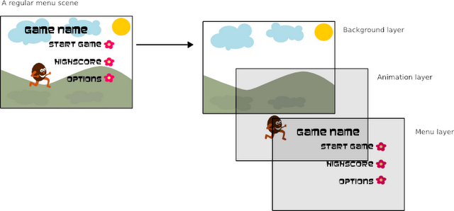

Basic Concepts¶
There are some basic concepts introduced in this library that you will need to know when developing a cocos2d application:
Scenes¶
A scene (implemented with the Scene object) is a more or less
independent piece of the app workflow.
Some people may call them “screens” or “stages”. Your app can have
many scenes, but only one of them is active at a given time.
For example, you could have a game with the following scenes: Intro, Menu, Level 1, Cutscene 1, Level 2, Winning cutscene, losing cutscene, High scores screen.
You can define every one of these scenes more or less as separate apps; there is a bit of glue between them containing the logic for connecting scenes (the intro goes to the menu when interrupted or finishing, Level 1 can lead you to the cutscene 1 if finished or to the losing cutscene if you lose, etc.).
A scene is described in cocos2d as a tree of CocosNodes where the root is a Scene node, the most near descendants usually are Layers, and they hold and organize individual elements.
Example for the main menu screen:
main_menu_scene : Scene node holding all the main menu elements
animated_background : Layer depicting an animated background
static_background : Sprite with a nice draw covering all the screen
far_trees : Layer holding the most distant trees
tree_1..tree_k : Sprites showing trees
birds : Layer holding flying birds
bird_1..bird_n : Sprites showing birds
near_trees : Layer holding the most near trees
tree_1..tree_m : Sprites showing trees
main_menu : Menu, a Layer subclass provided by cocos that handles all the behavior
related to menu (key listening, highlight, select...)
item1 : MenuItem , 'play'
item2 : MenuItem , 'options'
item3 : MenuItem , 'quit'
There is also a family of Scene subclasses called transitions (implemented with
the TransitionScene object) which allow you to
make transitions between two scenes (fade out/in, slide from a side, etc).
Since scenes are subclass of CocosNode, they can be transformed manually or by using actions. See Actions, Transformations and Effects for more detail about actions.
Director¶
The director is the component which takes care about going back and forth between scenes.
The director is a shared (singleton) object. It knows which scene is currently active, and it handles a stack of scenes to allow things like “scene calls” (pausing a Scene and putting it on hold while other enters, and then returning to the original). The push, replacement or end of the current scene is made by director.
The director is also responsible of initializing the main window.
To get the director object you do:
import cocos
from cocos.director import director
Implementation lives in cocos.director
Layers¶
Layers helps you organize the scene in the back to front axis, by example
- background : a fixed draw of landscape
- far : decorative trees and birds
- middle : platforms
- near : player, enemies, coins
- HUD : Heads Up Display to show game stats like life, energy
You can think layers as (usually) transparent sheets where the children are drawn, and the scene as the stack of sheets
In non MVC design style some code related to nodes interaction tends to float at the layer holding the entities, providing higher functional units. By example, Menu is a Layer subclass that knows how to layout and animate items, read user input and do control flow.
Layers are the ones defining appearance and behavior, so most of your programming time will be spent coding Layer subclasses that do what you need.
The Layer is where you define event handlers. Events are propagated to layers (from front to back) until some layer catches the event and accepts it.
Even if any serious app will require you to define some Layer subclasses, cocos2d
provides some useful specialized layers
MultiplexLayer, a group of layers where only one is seen at a timeScrollingManager,ScrollableLayer; does the logic to limit scroll to viewable areasRectMapLayer,HexMapLayer; displays a group of rectangular or hexagonal tilesMenu, implements simple menusColorLayer, a solid color rectanglePythonInterpreterLayer, used by director to pop up an interactive console to peek and poke at the objects in our scene ( ctrl + I to toggle on-off)
To make loading of appropriate assets easier you may override the __init__
method of your Layer subclass. This will be called when your Layer is
created.
Since layers are subclass of CocosNode, they can be transformed manually or by using actions. See Actions, Transformations and Effects for more detail about actions.
Sprites¶
A cocos2d’ sprite is like any other computer sprite. It is a 2D image that can be moved, rotated, scaled, animated, etc.
Sprites (implemented using the Sprite class) can have other sprites
as children. When a parent is transformed, all its children are transformed as well.
Since sprites are subclass of CocosNode, they can be transformed manually or by using actions. See Actions, Transformations and Effects for more detail about actions.
Events¶
cocos2d uses The pyglet Event Framework to handle events.
The pyglet event framework in a pinch¶
you have emitters (instances of pyglet.event.EventDispatcher)
each emitter registers as much events as desired, each one identified by a string (the event name)
to act over events, you register listeners with the emitter. Essentially, you provide the emitter with a (<event name>, callable) and the emitter will call the callable when <event name> happens. Any number of listeners can register for a (emitter, <event name>) pair. A listener can register to any number of emitters.
example registration emitter events:
class Bunker(pyglet.event.EventDispatcher): ... def building_update(self, dt): ... if self.elapsed_time>self.building_time: self.dispatch_event('on_building_complete', self) def take_damage(self, damage): self.dispatch_event('on_building_under_attack', self) self.life -= damage if self.life<0: self.dispatch_event('on_building_destroyed', self) # following lines register the events that Bunker instances can emit Bunker.register_event_type('on_building_complete') Bunker.register_event_type('on_building_under_attack') Bunker.register_event_type('on_building_destroyed')Note that an event can carry zero, one or more arguments; here we send the instance emitting the event.
example registration listeners:
class Commander(object): def __init__(self, ...): self.buildings = [] ... def invest_resources(self): ... bunker = Bunker(...) # register to receive all events from object bunker bunker.push_handlers(self) self.buildings.append(bunker) ... # handlers for the events def on_building_complete(self, building): ... def on_building_under_attack(self, building): ... def on_building_destroyed(self, building): ...Note that the handlers accepts the parameters that the event carries. The listener registration here works as:
- we pass a class instance to push_handlers
- pyglet will look at methods in this class instance whose name match <event name> for any <event name> which the emitter registered, and then register ( <event name>, obj.event_name ) for each match.
With this style of listener registration you should be careful when registering for two emitters: if both emitters can generate ‘on_cuack’ events and you register:
emitter1.push_handlers(obj) emitter2.push_handlers(obj)then obj.on_cuack will be called by both emitters.
Another listener registration style is pushing explicit handlers:
bunker.push_handlers( self.on_building_complete, self.on_building_under_attack, self.on_building_destroyed )When you want a listener to stop receiving events from an emitter, you de-register the listener:
emitter.remove_handlers(...) # params as in push_handlersEvent propagation : The event is propagated to all handlers from the top of the emitter stack until one returns EVENT_HANDLED.
Cocos and events¶
Besides using events to get user input (‘on_key_press’, ‘on_mouse_move’,...) or window status change ( ‘on_activate’, ... ) , you can use events to decouple the model from the view in your app. The game Tetrico, to be found in samples/tetrico is an example of this usage.
Cocos in general will not automatically handle listeners registration/de-registration, except for one special case: the emitter is director.window and the listener is a layer or scene Thus, for the general case, you must handle the push_handlers - remove_handlers thing by yourself. When your listener lives in a CocosNode, a good scheme is pushing handlers in the on_enter method and remove handlers in the on_exit method. This way, you are sure your handlers will not be called when the node is not in the active scene. Also, for custom events, it is a good practice to not use event names that director.window uses: that prevents unexpected double calls to the handler(s).
For the special case that emitter is director.window and the listeners are layers or scenes, cocos can handle the registration / de-registration:
When a scene becomes active it would walk the scene tree to allow layers autoregistering for director.window events It would not attempt to register itself as a listener except if the scene.enable_handlers is called. The walk begins in the scene, and passes only to layer class childs.
When prompted from the above walk, a layer whose class member is_event_handler has value True will register itself as a director.window listener The registration will be on the form:
director.window.push_handler(layer)so any method whose name matchs a <event name> will be registered as a listener.
When the scene becomes inactive ( by director.pop by example ), the matching walk calling:
director.window.remove_handlers(layer)will be issued.
Events generated by cocos itself:
- ( director, ‘on_push’ )
- ( director, ‘on_pop’ )
- ( director, ‘on_resize’ )
- ( director, ‘on_cocos_resize’)
Cocos registers a default key listener that provides handy functionality, see Default Handlers